Premium 5C
Puerta acorazada grado 5C
La puerta de seguridad fabricada en España con mayor resistencia de la gama CABMA. Es la que se elige para establecimientos obligados a tener medidas de seguridad y para viviendas que guardan bienes de valor.
- Grado 5
- UNE-EN 1627
- Clase C
- UNE 85160
- AENOR
- Producto certificado
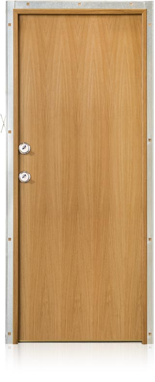
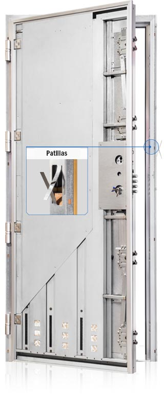
Así está hecha por dentro
Baja para desmontarla pieza a pieza.
DeslizaPremium 5C
Grado 5 según UNE-EN 1627 y clase C según UNE 85160. Es la certificación de seguridad más alta del momento.
Cierre en todo el canto
Cerradura doble de grado 7 y desviadores con bulones de gancho antirretroceso. La hoja queda anclada arriba, en el centro y abajo.
Marco tubular
Chapa galvanizada reforzada por dentro, con burlete incorporado y patillas para anclarlo al muro.
Tablero exterior
Madera de primera calidad. Puedes elegir otro acabado: maderas naturales, lacado en cualquier color RAL o vinilo.
Chapa de acero galvanizado
Envuelve la hoja por delante y por los cantos. Es anticorrosión.
Cerámica de 7 mm
Recorre la hoja de arriba abajo y frena el ataque con radial.
Refuerzos interiores
Omegas, barras estabilizadoras en doble U y barras de tetracero.
Chapa de manganeso
Protege la cerradura de taladros e impide arrancar el escudo.
Escudo de acero F-522
De fabricación propia, con una dureza de 62 Rockwell (HRC).
Bombillo KESO 8000 Master
Antibumping, antitaladro y antiganzúa. Llaves protegidas por patente en vigor hasta 2034.
4 bisagras de 6 mm
Acero tratado, con rodamientos y regulación en 3D.
6 antipalancas
Refuerzan el lado de las bisagras para que la hoja no se pueda sacar haciendo palanca.
Fabricada en España
La medimos, la pedimos a fábrica y la instalamos en cualquier punto de Asturias.
Cerradura y herrajes
Fotos reales de las piezas que monta la Premium 5C. Pulsa en cada una para verla en grande.

Cerradura doble grado 7Doble bombillo con bloqueo de seguridad. 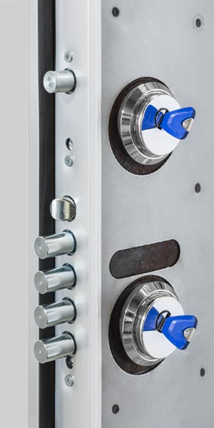
Control de accesosDoble cerradura para decidir quién entra. 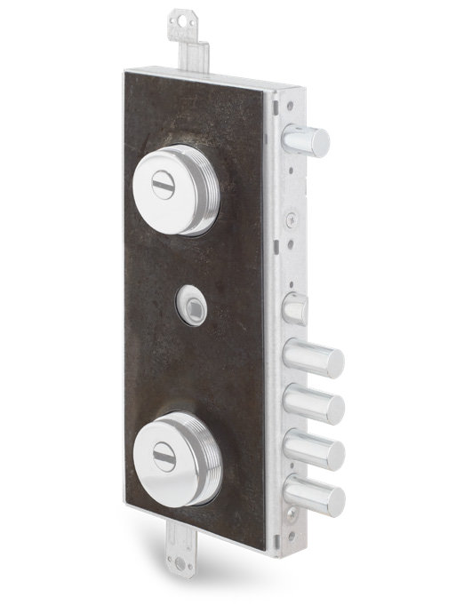
Chapa de manganesoRecubre la cerradura, impide arrancar el escudo y la protege de taladros. 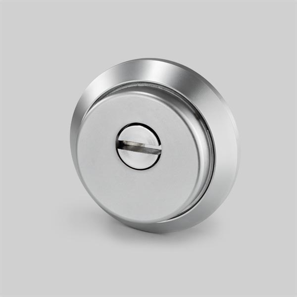
Escudo F-522Fabricación propia en acero de 62 HRC. 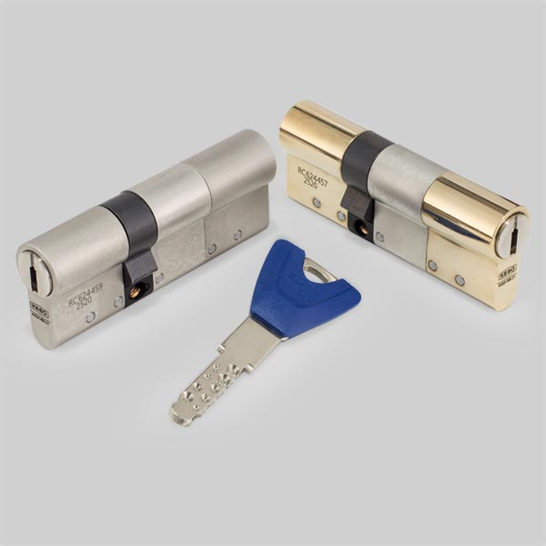
Bombillo KESO 8000 MasterEl elegido para la gama Premium. 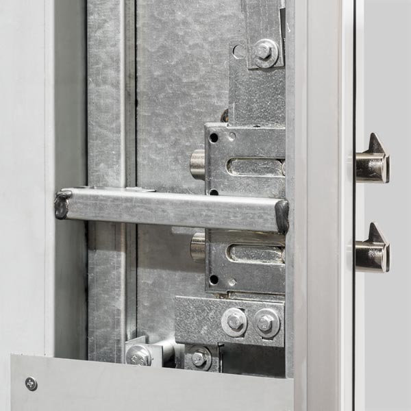
DesviadoresCierre con bulones de gancho y antirretroceso. 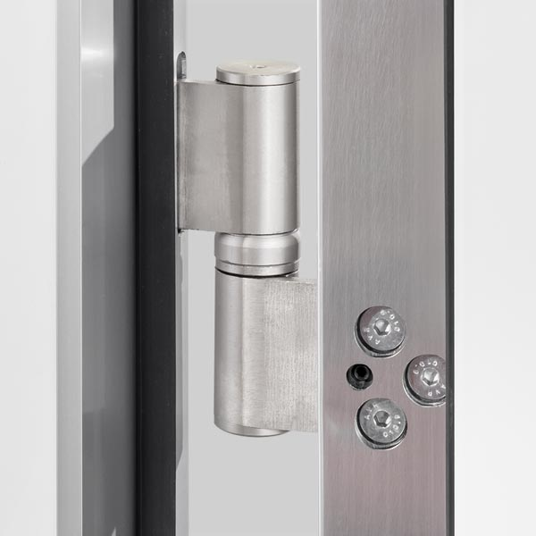
Bisagras con rodamientos4 bisagras de acero tratado de 6 mm. 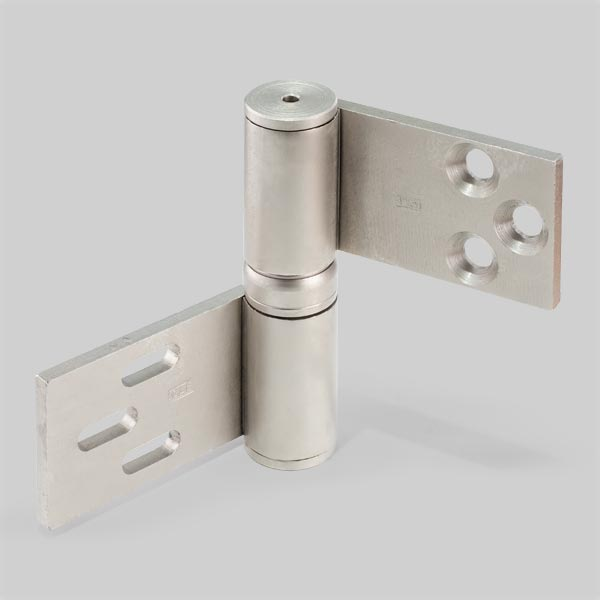
Regulación en 3DLa hoja se ajusta en altura, profundidad y lateral. 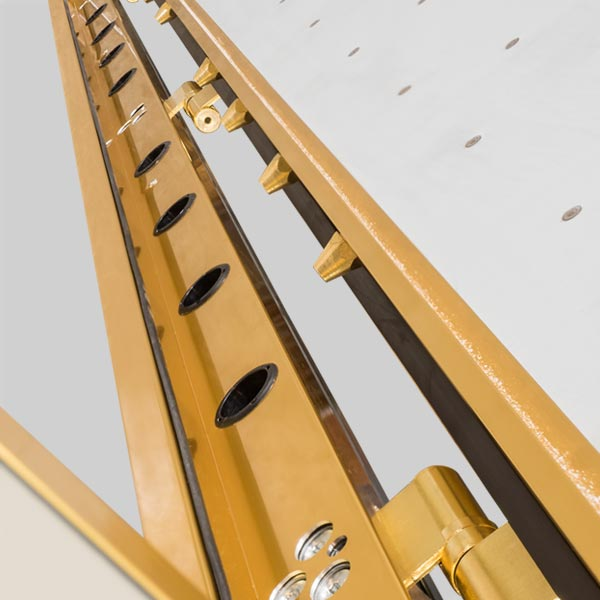
Antipalancas6 antipalancas acompañan a las bisagras. 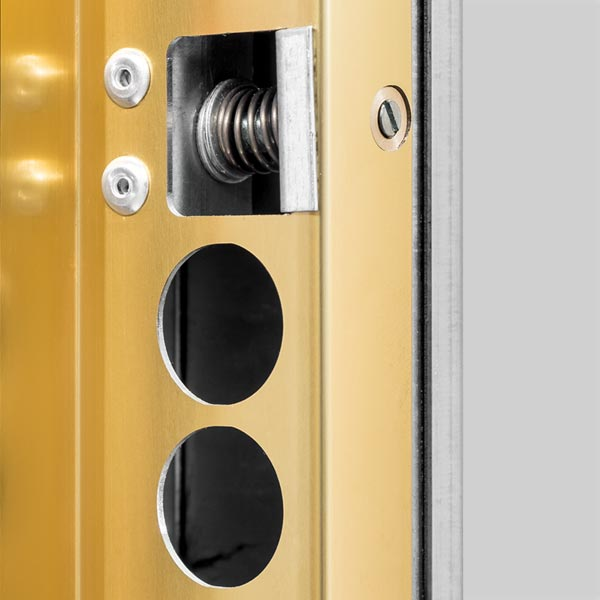
Regulador de resbalónPara ajustar cómo cierra el resbalón. 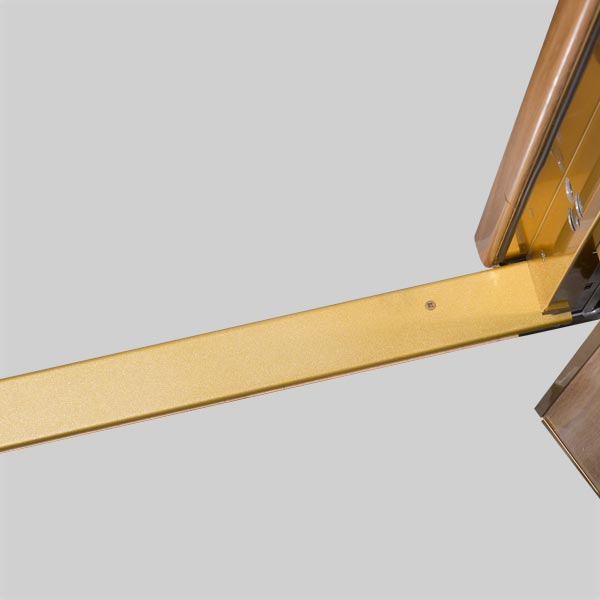
TapaCon pletina estabilizadora.
Perfil y marco de aluminio
El perfil de la hoja y el forrado del marco se sirven en tres acabados.
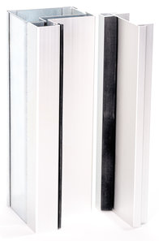
Cromado 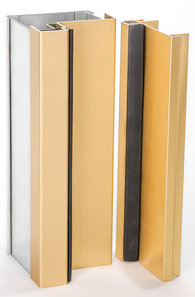
Dorado 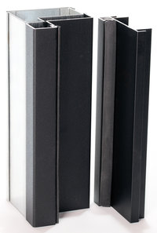
Negro
Resistencia frente a herramientas
Herramientas profesionales con las que se ensaya el sistema de cierre, de menor a mayor nivel de ataque.
| Nivel | Tipo de ataque | Herramientas |
|---|---|---|
| Nivel AMedio | Sin ruido |
|
| Nivel BAlto | Con ruido |
|
| Nivel CMáximo | Con ruido |
|
Medidas
| Medida total | Paso real |
|---|---|
| 206 x 89 cm | 199 x 75 cm |
| 209 x 91 cm | 202 x 77 cm |
| 209 x 95 cm | 202 x 81 cm |
Marco estándar. Si tu hueco es distinto, la fabricamos a medida.
Equipamiento
- Calidad garantizada
- Marcado CE
- Contra el robo
- Doble blindaje exterior e interior
- Cerámica
- Marco de acero
- Refuerzos de acero
- Protector abocardado antitaladro
- Chapa de manganeso antitaladro
- Cerrojos de acero
- Cerradura de máxima seguridad
- Bombillos de alta seguridad
- 200.000 ciclos de apertura
- Bisagras de seguridad
- Aislante
- Cepillo cortavientos
- Tableros de madera de primera calidad
- Puertas a medida
Certificada por AENOR
La seguridad de la Premium 5C está contrastada con ensayos normalizados frente a efracción en laboratorios externos acreditados. Pulsa en cada documento para verlo.

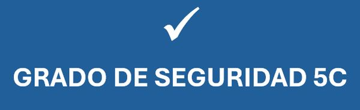
Otras puertas
Si quieres compararla, estas son las más cercanas. Compárala con ellas


Ven a verla en persona
En nuestra sede de Gijón te enseñamos la Premium 5C y te asesoramos sin compromiso.
- Dónde estamos
- Camino de la Xacona, 40
33392 Gijón (Asturias) - Teléfono
- 985 053 052
 Pulsa para ver la ruta
Pulsa para ver la ruta